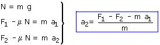
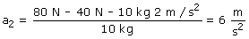

|
El bloque tendrá aceleración en el sentido de la fuerza F y se moverá en el sentido de dicha aceleración. La fuerza de rozamiento irá en sentido contrario al movimiento y su módulo valdrá μN |
Aplicamos ael principio de la Dinámica a los casos en que F1= 40 N y F2 = 80 N
|
|
 |

Sustituyendo valores:

Observa que con el doble de fuerza no se consigue el doble de aceleración. Esto se debe a que inter-viene una fuerza más, la de rozamiento